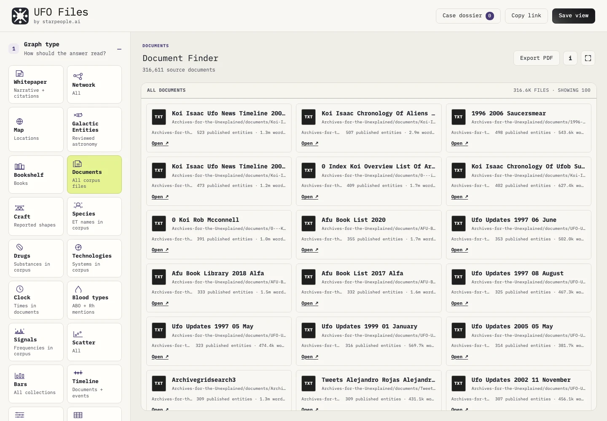

UFO Files
Explore the records. Follow the connections.
UFO Files is a visual research app for exploring UFO documents, transcripts, and structured observations together. Find source material, see how people, places, and events connect, and follow the evidence behind each result.
One archive. Different questions.
Choose a view to see what you can investigate.
How do records and reported events unfold over time?
Explore dated documents and reported events in sequence, then inspect the sources behind an entry.
A place to investigate.
Not just a place to browse.
Start with a question about a person, place, event, or recurring detail. Use the views to narrow your search, then return to the underlying records.
Find the relevant material.
Explore the document catalog and use collection filters to focus on the sources you want to examine.
Inspect the connection.
Move from a graph, location, or time pattern to its contributing records and source passages. Compare context across documents.
Build a case dossier.
Collect records as supporting evidence, contrary evidence, or context. Keep research notes in your browser and export your dossier when you’re ready.
Keep the source
in the picture.
The catalog brings together government records, research collections, books, interviews, and other archived material. Machine-readable text makes these collections searchable and connects their references.
A line in a graph is a lead to examine. It does not establish that an account is true or that two sources independently corroborate it. UFO Files keeps source context available so you can assess the connection yourself.
Explore the machine-readable archive ↗
Field Station is
one source among many.
Field Station captures and reviews new observations. UFO Files provides the broader research context.
The integration connects published observations with reviewed objects, recordings, capture-model information, county-level locations, and Internet Archive evidence. Observation records remain distinct from claims extracted from historical documents.
Field Station views depend on the currently published catalog; some snapshots may not yet contain observation records.
Meet Field Station ↗Bring a question.
Follow the evidence.
Open the research app in your browser, or explore the code and data behind it.